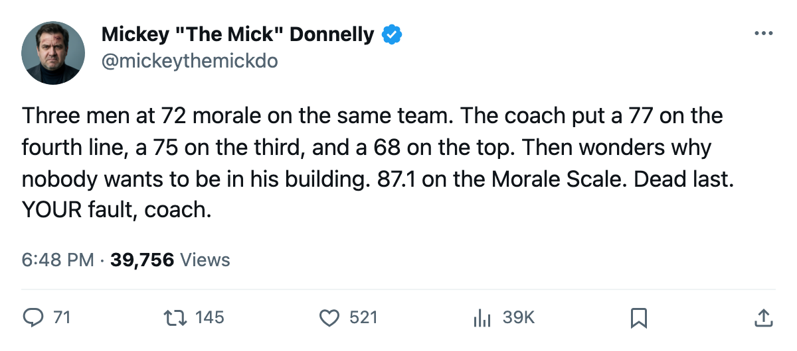
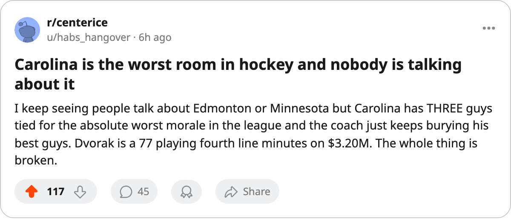

THE UNHAPPIEST ROOM IN HOCKEY IS IN CAROLINA. THREE MEN AT 72. YOU'RE PAYING $63.79M FOR THIS.
The Bureau's Morale Scale puts them dead last. The lineup card is the reason.
 Mickey "The Mick" DonnellyColumnist, ex-goalie · The Penalty Box
Mickey "The Mick" DonnellyColumnist, ex-goalie · The Penalty Box
Three of the 15 unhappiest men in this league wear the same sweater.  Carolina Hurricanes sit at 87.1 on the Bureau's Morale Scale, dead last in a 30-club league. Nobody else is lower.
Carolina Hurricanes sit at 87.1 on the Bureau's Morale Scale, dead last in a 30-club league. Nobody else is lower.
 Radek Dvorak76 rates 77 in the Book. He plays 8.1 minutes a night. He sits fourth line center on a fourth line that barely sees the ice. He is making $3.20M with two years left on the deal. Morale: 72.
Radek Dvorak76 rates 77 in the Book. He plays 8.1 minutes a night. He sits fourth line center on a fourth line that barely sees the ice. He is making $3.20M with two years left on the deal. Morale: 72.
You do not pay $3.20M for 8.1 minutes and act surprised when the man checks out. You pay it and you play him, or you trade him, or you look him in the eye and tell him the truth. You do not bury him below a 68 and wonder why the locker room has gone quiet.
Because that is what happened.  Jaroslav Svoboda66 rates 68 and carries top-line and penalty-kill minutes. Dvorak at 77 sits behind him.
Jaroslav Svoboda66 rates 68 and carries top-line and penalty-kill minutes. Dvorak at 77 sits behind him.  Radim Vrbata74 rates 75, plays 10.9 minutes on the third wing, and sits behind Svoboda too. The 77 and the 75 are below the 68. Then read the morale numbers.
Radim Vrbata74 rates 75, plays 10.9 minutes on the third wing, and sits behind Svoboda too. The 77 and the 75 are below the 68. Then read the morale numbers.
Vrbata has zero contract years left. He makes $0.40M. He is a free agent watching a lineup card that puts him below a 68 and he has every right to phone it in from the press box. Morale 72. Of course it's 72.
Brad DeFauw70 is the third man at 72. Three games. 5.3 minutes a night. $1.22M with one year left. A man making that kind of money who can barely see the ice from the bench is not a problem with a bad attitude. He is a problem with a lineup card.
The standings say 4-7-2, 14 points, three straight losses. The payroll says $63.79M. Do the arithmetic the desk would do: $4.56M per point. That is among the worst in this league, and the man doing the math is the one who put a 77 on the fourth line while a 68 drives the play.
The coach owns this. The players are not being unreasonable. They are being awake. A 72 on the Morale Scale from a man earning $3.20M to skate 8.1 minutes is not a character flaw. It is a response. Three men at the same number, in the same room, on the same sweater, tells you the problem is not three bad attitudes. The problem sits behind the bench with the lineup card and hasn't changed it.
Philadelphia is 6-1 on the road, 8-6-0 with 16 points, and comes to Carolina on the 15th. They are not a good team. But they are not the unhappiest team in hockey either. That crown belongs to the room where a 77 rides the fourth line and a 68 gets the ice time. The Scale and the scoresheet say the same thing. 87.1. Dead last. Your own fault, coach.

